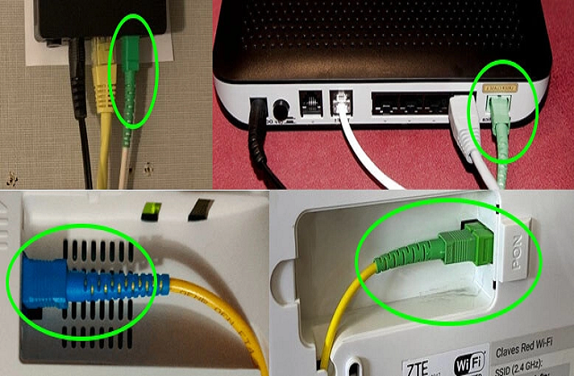

Es un dispositivo que permite la transmisión de datos digitales a través de líneas telefónicas analógicas, cables coaxiales o conexiones de fibra óptica.
Funcionamiento:
Modulación: Cuando se envían datos desde una computadora, el módem convierte las señales digitales en señales analógicas mediante un proceso llamado modulación. Esto permite que los datos se transmitan a través de líneas telefónicas o cables.
Transmisión: La señal analógica es enviada a través del medio de comunicación (como una línea telefónica o un cable).
Demodulación: Al recibir datos, el módem convierte las señales analógicas de nuevo en señales digitales mediante un proceso llamado demodulación. Esto permite que la computadora o el dispositivo receptor interprete correctamente la información.
Tipos de modem:
Módems Dial-Up: Utilizan líneas telefónicas convencionales para conectarse a Internet.
Módems DSL (Digital Subscriber Line):Utilizan líneas telefónicas para proporcionar acceso a Internet de alta velocidad sin interrumpir el servicio telefónico.
Módems por Cable:Utilizan la infraestructura de televisión por cable para proporcionar acceso a Internet.
Módems de Fibra Óptica: Utilizan cables de fibra óptica para transmitir datos a velocidades muy altas.

Módem satelital:Facilita el acceso a Internet mediante comunicación satelital. Los módems satelitales transmiten y reciben datos hacia y desde satélites que orbitan la Tierra.
Estándares de Módems
Los estándares son directrices establecidas por diversas organizaciones y corporaciones para la operación de los módems. Estos estándares abarcan técnicas de modulación y transmisión, que son utilizadas por los módems y otros componentes de su funcionamiento. El estándar internacional es conocido como ITU-T (Unión Internacional de Telecomunicaciones - Sector de Telecomunicaciones), anteriormente denominado CCITT (Comité Consultivo Internacional de Telegrafía y Telefonía).
Estandares de factores e internacionales
V.22: Proporciona 1200 bits por segundo a 600 baudios (cambios de estado por segundo).
V.22bis: Considerado el primer estándar mundial verdadero, permite 2400 bits por segundo a 600 baudios.
V.32: Ofrece velocidades de 4800 y 9600 bits por segundo a 2400 baudios.
V.32bis: Proporciona hasta 14,400 bits por segundo, con la opción de bajar a 12,000, 9600, 7200 y 4800 bits por segundo.
V.32terbo: Permite hasta 19,200 bits por segundo o reduce la velocidad a 12,000, 9600, 7200 y 4800 bits por segundo; puede operar a tasas más altas mediante compresión, aunque no es un estándar del CCITT/ITU.
V.34: Ofrece hasta 28,800 bits por segundo o puede bajar a 24,000 y 19,200 bits por segundo, manteniendo compatibilidad con V.32 y V.32bis.
V.34bis: Permite velocidades de hasta 33,600 bits por segundo o puede bajar a tasas de transferencia de 31,200 o V.34.
V.35: Interfaz troncal para paquetes entre un dispositivo de acceso a una red y una red con tasas superiores a 19.2 Kbps; puede utilizar el ancho de banda de múltiples circuitos telefónicos.
V.42: Ofrece la misma tasa de transferencia que V.32 y V.32bis pero con mejor corrección de errores y mayor fiabilidad.
V.90: Proporciona hasta 56,000 bits por segundo en dirección descendente (aunque en la práctica es algo menos). Se deriva de la tecnología x2 de 3Com (US Robotics) y K56flex de Rockwell.
Protocolos
El ruido puede causar pérdidas significativas de información en módems que operan a altas velocidades, por lo que se han desarrollado diversas técnicas para el control de errores. Cuando un módem cuenta con control de errores y detecta ruido, lo que se experimenta es una breve inactividad o pausa en la conexión. En contraste, si el módem no tiene control de errores, el resultado puede ser la aparición de caracteres "basura" en la pantalla o, si se está transfiriendo un archivo, la necesidad de retransmitir esa parte del archivo afectada.
Estandares de control de errores
Los protocolos en un entorno de comunicación de datos son esenciales para dirigir la transferencia de información entre dos entidades de comunicación. Estos protocolos de transmisión coordinan el proceso de envío y recepción de datos, además de influir significativamente en las velocidades que se pueden alcanzar. Asimismo, la estandarización de protocolos y métodos de conexión permite la comunicación efectiva entre módems de diferentes marcas y modelos.
Protocolos de Comprobación de Errores
El control de errores se refiere a varias técnicas utilizadas para verificar la fiabilidad de los bloques de datos o caracteres transmitidos.
Paridad: La paridad es un método en el que el transmisor añade un bit adicional a los bits que codifican un símbolo. Se considera paridad par cuando el símbolo tiene un número par de bits y paridad impar en caso contrario. El receptor recalcula el número de bits con valor uno, y si coincide con el bit de paridad enviado, acepta el paquete. Este método permite detectar errores de un solo bit en los símbolos transmitidos, pero no es efectivo para detectar errores múltiples.
CRC (Cyclic Redundancy Check, Comprobación de Redundancia Cíclica): El CRC es una técnica de detección de errores que utiliza un algoritmo cíclico. Cada bloque o trama de datos es verificado tanto por el módem que envía como por el que recibe. El módem emisor inserta el resultado del cálculo en cada bloque en forma de código CRC, lo que ayuda a identificar errores en la transmisión.
MNP (Microcom Networking Protocol, Protocolo de Red Microcom):El MNP es un protocolo de control de errores desarrollado por Microcom, Inc. Este protocolo garantiza transmisiones libres de errores mediante la detección de errores (utilizando CRC) y la retransmisión de tramas incorrectas.
Protocolos de Transferencia de Archivos
Xmodem-1k: es una variante del Xmodem que utiliza bloques de 1 kilobyte (1024 bytes). Aunque algunos programas lo llaman incorrectamente "Ymodem", cada vez más personas lo denominan correctamente.
Zmodem: es un protocolo avanzado que ofrece alta velocidad y buena fiabilidad, además de varias características útiles. Utiliza paquetes de 1 KB en condiciones óptimas, pero puede reducir el tamaño del paquete si la calidad de la línea se deteriora. Una vez que la calidad mejora, el tamaño del paquete se incrementa nuevamente.
Ymodem: es una variante de Xmodem que permite la transferencia de múltiples archivos en una sola sesión. Durante esta transferencia, se conserva el nombre, tamaño y fecha del archivo. Puede utilizar bloques de 128 bytes o, más comúnmente, 1 kilobyte.
Telink: es un protocolo que se encuentra principalmente en los sistemas de tablones de anuncios Fido. Es esencialmente una versión de Xmodem que utiliza CRC para la verificación y envía un bloque adicional como encabezado del archivo, indicando su nombre, tamaño y fecha.
Kermit fue desarrollado para facilitar el intercambio de archivos entre diferentes tipos de computadoras. Casi ninguna computadora que utilice Kermit puede configurarse para enviar archivos a otra computadora que también use Kermit.
LOS 5 MEJORES MÓDEMS PARA INTERNET GIGABIT
Estas marcas son reconocidas en el mercado de equipos de redes por su calidad, rendimiento y confiabilidad en diversos segmentos, desde el hogar hasta el entorno empresarial. A continuación, se detalla por qué estas marcas son destacadas:
ASUS: Es conocida por sus routers de alto rendimiento y tecnologías avanzadas para hogares y pequeñas oficinas. Ofrece características innovadoras como AiMesh para crear redes de malla, QoS avanzado y tecnología de gaming que reduce la latencia. Su relación calidad-precio es excelente en el segmento de routers de alta gama para usuarios domésticos y gamers.
Linksys: Fue pionera en popularizar los routers de consumo. Se destaca por su facilidad de uso y diseño amigable, especialmente en el mercado de redes domésticas. Sus routers son generalmente estables y muchos modelos permiten configuraciones avanzadas, como redes de malla con el sistema Velop.
Huawei: Es reconocida a nivel mundial, especialmente en soluciones de redes empresariales y telecomunicaciones. Se destaca por ofrecer equipos de alta calidad con tecnología avanzada en redes 4G, 5G y fibra óptica. Además, fabrica routers de consumo con características avanzadas como Wi-Fi 6 y configuración remota mediante aplicaciones.
Netgear: Es una marca popular en redes domésticas y pequeñas empresas, conocida por su amplia gama de routers y dispositivos de almacenamiento en red (NAS). Sus modelos Nighthawk y Orbi (para redes de malla) son muy valorados por su rendimiento en conexiones de alta velocidad y características avanzadas. Ofrecen soluciones de red fáciles de instalar y administrar, junto con opciones para usuarios avanzados.
Cisco: Es líder en soluciones de redes empresariales y profesionales, siendo la opción preferida para grandes organizaciones y centros de datos. Ofrece productos altamente confiables, con seguridad avanzada y soporte técnico sólido, orientados a entornos críticos. Aunque su línea doméstica (Linksys) fue vendida, sigue ofreciendo soluciones empresariales como switches, routers y firewalls de alto rendimiento.
Cada marca sobresale en un segmento particular, ya sea para usuarios domésticos, gamers, pequeñas empresas o grandes corporaciones. La elección depende del tipo de usuario y las necesidades específicas de la red.
LOS 5 MEJORES MÓDEMS PARA INTERNET GIGABIT
Estos módems son considerados los mejores para conexiones de internet gigabit debido a su rendimiento, confiabilidad y características específicas que se adaptan a diferentes necesidades.
Motorola MB8600: Este módem ofrece velocidades de hasta 1 Gbps y es compatible con conexiones DOCSIS 3.1, lo que es esencial para aprovechar las velocidades de internet gigabit.
ARRIS SURFboard SB8200: Este módem es una opción accesible para quienes buscan alta velocidad sin un precio elevado. Soporta hasta 2 Gbps en conexiones agregadas, ideal para hogares que requieren una conexión rápida y estable sin costos adicionales.
NETGEAR Nighthawk CM2000: Ofrece bajas latencias, esenciales para juegos en línea en tiempo real. Su potente procesador ayuda a reducir la congestión y optimizar el tráfico. Con DOCSIS 3.1, este módem está diseñado para manejar grandes volúmenes de datos y es compatible con velocidades superiores a 1 Gbps, ideal para gamers.
NETGEAR Nighthawk CM1200: Puede gestionar altas demandas de tráfico y es compatible con redes locales robustas. Diseñado para pequeñas empresas y profesionales que necesitan una conexión estable y segura durante todo el día.
ARRIS SURFboard SBG8300: Combina un módem DOCSIS 3.1 con un router Wi-Fi AC2350, eliminando la necesidad de dos dispositivos separados. Proporciona velocidades adecuadas para conexiones gigabit, ideal para hogares que necesitan Wi-Fi rápido y estable.
Cada uno de estos módems destaca en su categoría al ofrecer características específicas que satisfacen diversas necesidades, desde velocidad y rendimiento hasta estabilidad para juegos y negocios, así como opciones con Wi-Fi para quienes buscan simplificar la instalación en casa.